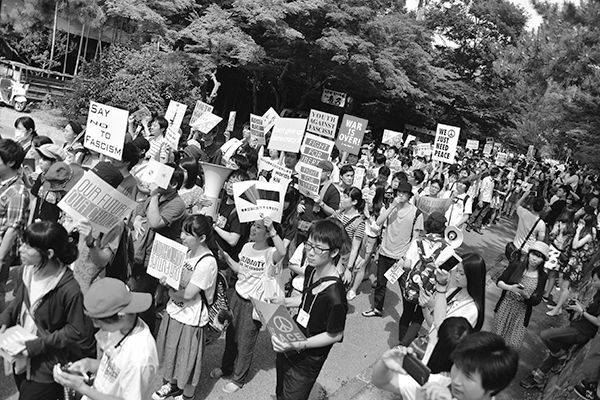
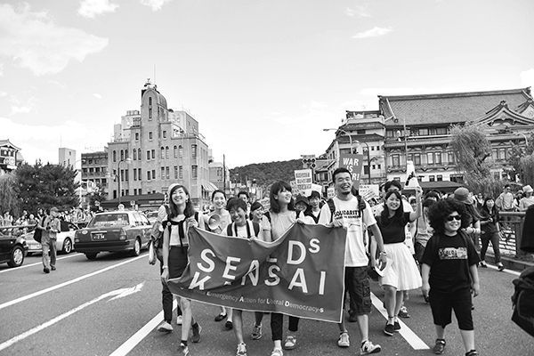

| 殺すな、殺されないために！: ６月21日、戦争立法に反対する学生デモ（京都市）スピーチ集 | |
| SEALDs KANSAI | |
| kinyobi (2015) | |
殺すな、殺されないために！
６月21日、戦争立法に反対する学生デモ（京都市）スピーチ集
SEALDs KANSAI
目 次
戦争法案（安全保障関連法案）に反対の意思を示そうとSEALDs KANSAI〈注〉が６月21日、京都市内で戦争立法に反対するデモを行なった。ソーシャル・ネットワーキング・サービス（SNS）などを通じて集まった参加者は約2200人（主催者発表）。学生たち若者は観光客らでにぎわう京都市の中心部約４キロメートルを２時間かけて歩きながら、「憲法守れ」「民主主義って何だ」などとコールした。
最近のデモの特徴は、コールの合間にスピーチが入ること。６・21京都デモもそうだった。私は、学生たちの訴えを聞いていて胸が熱くなった。自らの体験に基づいた言葉一つひとつに魂がこもっている。切実だ。本気なのだ。
『週刊金曜日』では７月３日号の特集「戦争法案と若者」のなかでスピーチの一部を紹介した。すると、読者からもっと読みたい、全文を知りたいなどの声が寄せられた。そこでSEALDs KANSAIと相談し、デモ当日、サウンドカーで話した７人のスピーチ全文を緊急に電子出版することにした。
若者たちの訴えにどうか耳を傾けていただきたい。そして、戦争法案に対してどう考え、どのような行動をとるのか、真剣に考えていただきたい。ほかならぬ、あなた自身の問題なのですから。
『週刊金曜日』編集部
伊田浩之
〈注〉SEALDs KANSAI（シールズ関西：Students Emergency Action for Liberal Democracy -- s KANSAI＝自由と民主主義のための関西学生緊急行動）
 ２０１５年６月21日、京都市円山公園。
寺田ともか 21歳 関西学院大学4回生
私が小学２年生のときに、ニューヨークの世界貿易センタービルが崩れ落ちました。９月11日のことです。
なんとなく覚えています。ニュースには泣き叫ぶたくさんのアメリカ人の姿が映っていて、大変なことがおきたんやって、幼心に思いました。だけど、その後流れてきたニュースの方がずっとずっと恐ろしかった。毎日、毎日、アフガンで、イラクで、自分と年の変わらないような子どもたちが、血を流しているのを、見なければならなかったから。
あの日、同時多発テロで犠牲になった人の数は約3000人。そして、その報復のために行なった対テロ戦争で 殺した人たちの数は、少なく見積もって、約130万人〈注〉。あの時、世界のリーダーたちは、「正義」という言葉を使ったけど、イラクに大量破壊兵器は無かったし、死ななくてよかった人たちが次々に殺されていくのを見た。
あれから14年が経ちました。日本政府は、集団的自衛権の行使容認を閣議決定し、武力行使を可能にするための具体的な法整備を始めた。世界情勢が変わったから、テロの脅威が高まっているから、日本と親密な関係にある国が攻撃された時はともに報復すべきだと。テロの脅威が高まった大きな原因の一つは、武力による必要以上の報復と 殺 戮 であったのに。
今はまだ、武力が最終的な解決手段になり得ると信じている、愚かで古い人たちが幅をきかせてるかもしれない。今はまだ、過去の過ちを正当化することでしか自分の国を誇れない虚しい人々が、この国のトップに立っているかもしれない。
ネット上では、恐怖に縛られた不自由な人たちが叫んでいる。「殺せ！殺される前に！」と。だけど、そんな時代はここで終わりにします。いや、70年前に終わったのです。
私たちは平和憲法に根ざした、新しい安全保障の原則をここに打ち立てよう。
「殺すな、殺されないために！」
私たちは、正義と秩序を基調とする国際平和を誠実に追い求め、国権の発動たる戦争と、武力による 威 嚇 又は武力の行使は、国際紛争を解決する手段としては、永久にこれを放棄する。この目的を達するため、陸海空軍その他の戦力は、これを保持しない。国の交戦権は、これを認めない。
この、最も賢明で、新しいやり方を、私たちは続けていく。やめない。専制と隷従、圧迫と 偏 狭 を地上から永遠に除去する日まで。
2015年6月21日、寺田ともか、私は、戦争立法に反対します。
（〈注〉出典：2015.3.26，「Endless War: As U.S. Strikes Tikrit & Delays Afghan Pullout, "War on Terror" Toll Tops 1.3 Million」http://m.democracynow.org/stories/15099 )
クリスティーナ 紀 子 21歳 京都教育大学４回生
安倍政権が押し進めようとしている安保法制について感じることを率直にお話しすると、私にとってこれはあまりにも重たい問題で、「考えることを放棄してしまいたい」というのが実感です。
というのも、私には自衛隊に入隊した友人がいるため、余計にこの問題が他人事ではなく身近なものとして、切実に感じられるからです。
現在、政府は自衛隊の活動範囲を地球規模にまで拡大し、イラクやアフガンなどの危険地域にも派遣させようと話を進めています。
ニュースでそのことが流れるたびに、私の友人もそこへ行くのだろうかと 動 悸 がおさまらずにいます。
そして、キャスターやコメンテーターの方々が解説されるひとつひとつの言葉が、私の心の深くに突き刺さってくるようで、とても苦しい思いがしています。
以前私が目にした新聞記事に、イラク戦争から帰還した元米軍兵士の方の特集がありました。この方は、6000人を大量虐殺した、あのファルージャ総攻撃にも加わった経験をもつ方です。
この方は、帰還してから今現在もなお、「自分が人を 殺 めてしまった」という事実を受け入れる過程の中で、抑えきれないほどの自責の念に 苛 まれているそうです。
彼と同時期にイラクに派遣された兵士の方々の中にも、人の死体を見てしまったこと、仲間が目の前で殺されてしまったことなど、戦場で体験した苦しい記憶を紛らわせるため、ドラッグやアルコールなど様々な依存症と闘っておられる方が大変多いそうです。
また、最悪の場合、自分は生きるに値しない人間だと自分自身を追い込み、自死する人の割合は、１日20人にものぼるということも記事に述べられていました。
このように、戦場に赴いた兵士の方々の命こそは助かったとしても、心はぼろぼろに壊れて帰って来られるのだということが分かります。
実際私がお会いした元兵士のおじいさんは、20歳で戦地から帰還した後発症したＰＴＳＤ（心的外傷後ストレス障害）が、80歳を超えた現在も未だに治っておられません。
おじいさんはただただ心が麻痺し、「嬉しい」とか「悲しい」といった感情が分からなくなってしまったり、ねむれなかったり、悪夢にうなされたり......そうやって苦しんでおられる現状があります。
戦場へ行かれた方々の声に耳を傾けると、戦争は誰もが持っている優しい心を容赦なく踏みにじり、一生にわたって心をむしばんでいくものだと改めて気づかされます。
災害派遣は本来の自衛隊の任務ではないものの、私の友人は、３・11の際に自衛隊の方々がレスキューをされている映像を観て、「自分も人を助けたい」と思い自衛隊に入りました。
自衛隊の方々の中には、他にも、貧困など家庭の状況、就職難などでやむなく入隊する方もおられます。
このように、私となんら変わりない同世代の人たちが、平和を求める人たちが、戦地へ赴き、「自分の手で人を殺める」ということの精神的苦痛に思いを馳せてみた時、私は心が張り裂けそうになります。
人のいのちを本当に大事にする視点があるならば、自衛隊員の方々を犠牲にし、武力で他国を 威 嚇 するのではなく、心と心が通い合う外交を本気で模索していくべきだと思います。
いま一番政府に言いたいのは、日本国民のいのちも、他国の人々のいのちも、すべて、徹底的に大事にしてほしいということです。
2015年６月21日、クリスティーナ紀子、私は断固として、安保法制に反対します。
仲野真人 19歳 京都精華大学１回生
僕が沖縄に行った時、沖縄の海は信じられないぐらい綺麗で、飯はめっちゃくちゃ 美 味 かったのを覚えてる。でも一番心に残っているのは沖縄のそういう暖かさとは裏腹な深い深い未だに解決されていない戦争の傷跡でした。
『政府は終戦を発表したけれど、沖縄の人たちは未だに平和のために闘っています。戦争はまだ終わっていない！』
この言葉を聞いた時、同じ日本にある沖縄が遠く感じました。しかし歴史を学んでいくにつれ、僕等が遠くしたんだと、僕等が沖縄を日本の問題と捉えてないことを知りました。
日本がアジアにした侵略戦争や捨て石にされた沖縄の映像や写真、証言を聞くたびに悲しさで胸が締め付けられる思いでした。
歴史を変えることも戦争の傷跡が消えることもできません。いくら隠しても、いくら薄汚れた嘘で誤魔化しても過去の過ちを美化することは出来ません。
安倍政権は去年７月に憲法解釈を変更して、集団的自衛権の行使を容認する閣議決定をしました。憲法の改正ではなく解釈を変えて強引に戦争ができる国になろうとしています。
武力と武力がぶつかれば、待っているのは戦争だけです。そんなもので平和なんて訪れないことは子どもでもわかるはずなんです。
このままだと僕の知ってる日本じゃなくなる気がするんです。
安倍さんの言う平和じゃいけないんです。
武力で 威 嚇 して、武力で黙らして、武力で平和を作ろうとする間違ったやり方で守られたいとは僕は全く思いません。
いま徴兵制も噂されています。そうなれば戦場に行くのは僕達若者です。未来を作っていく僕たちの手は銃を握るためにあるわけでもないし、誰かの首を絞めるためにあるわけでもない。
僕はこの手でたくさんの絵を描きたいし、ギターを弾いていたいし、僕はあなた達と手を取って歩きたい。未来は僕等の手の中です。
３・11の時、津波が多くの悲しみを生みました。僕はテレビから映される東北の姿を同じ日本の出来事のように思えませんでした。すべてを失うということがどういうことなのか分かりませんでした。
しかし、あの時たくさんの人が動きました。自分には何ができるのかって。僕はあの時たくさんの勇気をもらったし、たくさんの愛を知りました。こんなにも暖かい日本に生まれてよかったと心から思えました。日本が大好きになりました。
今こうして僕たちが声を上げることは決して無駄ではありません。戦争のことがいつか時代とともに忘れられても、僕たちはいつだって声をあげ、立ち上がります。
戦争の悲しみも３・11の悲しみも沖縄での悲しみも僕たちは決して忘れません。絶対に忘れません。
当たり前の日常と平和のために僕たちは声を上げ続けます。2度と戦争を起こさないように。70年間たくさんの人が守ってきた憲法を僕は守りたい。
戦争をしない、戦争に加担しない日本を子ども達に見せてあげたい。
今日勇気を持ってデモに来てくれた人ありがとうございます。みんなで歩きましょう。
聞いてくれてありがとうございました。
2015年6月21日、仲野真人、僕は戦争立法に反対します！
平良美乃 22歳 関西外国語大学４回生
はいたーい！
みなさんこんにちはーーー！！ 私の名前は平良美乃です！
大学から大阪へ出てきました、うちなーんちゅでございます！ 今日はよろしくお願いしまーす！
去年、2014年の今頃、私は新聞読んでいました。そして、沖縄県内への基地移設の工事が加速していることを知りました。
「は、辺野古海、埋め立てる？ 普天間、移設を辺野古に？ 新基地？ 反対の声は、関係ない？ 粛々と進めます？ めちゃくちゃな強行やっし。」このまま工事が進められたらどうなるんだろー、って不安でたくさんでした。
それまでも、教科書で沖縄戦の記述の書き換えだとか、安倍政権を疑問に思う部分はあったものの、特にそれを行動で示すことはありませんでした。でもあまりにもあからさまに現政権の動きが過激になってくるにつれ、「これはおかしすぎる、声あげんとヤバイかも」と強く感じ始めました。声だしても、でどーなるかとかわからないけど、何もしないとなにも変わらないし、今できることやらないと絶対あとで後悔する、と強く感じました。
で、私が去年ヤバイと感じてからもう１年経とうとしてますが、加速する、安倍政権の民主主義を無視した政治、軍事力を強めていく姿勢に、「人の命をなんだと思ってるの？」って強く感じるばかりです。
戦後70年という節目である今年、そんなの関係ねぇと言うかのように、軍事化が進む日本という国。世界に貢献するためだとか、大切な人が危険な時に助けれるようにするためなんだとか、色々な理由で戦争、武力行使を肯定させるような安倍政権に、強い違和感とあきれを感じています。
辺野古の新基地建設。沖縄県民がこれまで１度も喜んで基地提供をしたことはありません。にもかかわらず、仲井眞前沖縄県知事が承認したので......とか、辺野古が唯一の移設先なので......という言葉を使って工事を進め続けるのはどうなんでしょうか？ 仲井眞前沖縄県知事も、もともとは県外移設を掲げて当選している、そこも忘れないでほしい！
集団的自衛権の行使容認を含めた安保法制と基地建設。この軍事化でもろに影響を受けるのは......安倍さん、あなたたちじゃない！！！
私たち学生、若者を含めた一般市民です。
一人ひとりの命を軽く見すぎないでください。
70年前の戦争で私たちは何を学んだんでしょうか？ 死ぬのが怖くなくなる、人を殺すのも怖くなくなる。大切な家族の命まで、自分の手で絞めつけなきゃいけなくなる。そして、人が人じゃなくなる。２度と同じようなことを繰り返してはいけない。70年前、沖縄戦を体験したおじぃおばぁが話してきたことです。結局、武力ではなにも解決できない、これが歴史の教訓です！！
辺野古に新しく基地を作る必要なんてない。高江のヘリパッドも、安保法制も今の日本、世界に本当に必要なことじゃない。ただただ、アメリカにとって都合のいい事なんだってのは知ってる。
昨日は、沖縄でゆんたくるーって団体主催の6.20 Flag Marchに参加してきたんですけど、そこでスピーチした人が言ってた言葉がとても良かったのでシェアしたいと思います！ それは、今必要な抑止力は「助け合い」。本当にそうだと思います。
安保法制が成立したらどうなりますか？ 戦争に加担できる、巻き込まれやすくなる。そして軍需産業がもうかる。一部の金持ちが喜ぶ、軍需産業が喜ぶだけの、この安保法制まじエフユーシーケイ！
10年後、20年後、100年後の未来の子どもたちに、わたしたちは、どんな社会を残していくのでしょうか？ 軍事化した社会をこどもたちに受け継がさなければならないのでしょうか？
私を動かすもの、それは、おじぃおばぁから聞いてきた話や、想いと言葉を無駄にしたくないという想いと、あとで後悔したくないという気持ちです。
戦争できる社会を残すのはいやだ！
ヘイトがない社会になってほしい！
軍需産業に協力するのもいやだ！
独裁される社会なんていやだ！
話し合って、考えて、話し合って物事を決めていける社会を受け継ぎたい！
戦争に巻き込まれるなんていやだ！
一人ひとりの命を大切にし合える社会がいい！
最後に、この言葉は絶対伝えたい。
ＰＥＡＣＥ！！
それは、一人ひとりの命を大切にすること。ぬちどぅ宝！ 命があってこその喜びや楽しさだと思います！ お金には変えられないものがあるから。これが70年間受け継がれてきた歴史の教訓です！
70年前に起きたこと、２度と繰り返さないためにも、あとで遅かった、って後悔しないためにも、そして、これから産まれてくる子どもたちが平和な社会を受け継いでいくためにも。
2015年６月21日、平良美乃、私は、戦争立法に反対します！！
 2015年６月21日、京都市四条大橋。
塩田潤 24歳 神戸大学大学院修士2年目
みなさん、こんにちは。神戸大学の塩田潤と言います。よろしくお願いします。
僕は、少し前まで日本が今のような状況になるなんて思っていませんでした。もちろん、すべてに満足のいく社会ではありませんでしたが、自分がこんなふうにサウンドカーに乗って、こんなにも大勢の人の前でスピーチする日が来るなんて夢にも思いませんでした。
しかし、この国の政治や社会は、ここ数年で僕たちを置き去りにするかのようにめまぐるしく変化しています。激動する流れに置き去りにされないためにも、僕は今日、僕の思いを、僕の言葉で社会に伝えようと思います。
2014年７月１日、現政権は歴代の内閣が戦後70年間認めてこなかった集団的自衛権の行使容認を閣議決定しました。そして今年５月14日には安保法制を閣議決定、翌日には法案を国会に提出しました。これまで多くの人が指摘したように、今回の法案内容には様々な問題があります。
しかし、私は今回の安保法制も含めた、これまでの安倍政権の政治や社会に対する態度に憤りを覚えます。この国の最高法規である憲法をないがしろにし、世論を無視して閣議決定で一方的に国の行く末を決める態度は民主的とは言えません。国会では野党の質問に答えず、何度も何度も同じことしか繰り返さないその姿勢は、国民をばかにしているとしか言いようがありません。
民主主義や立憲主義といった、政治における最低限のルールも守れない人たちが、政治家をやっていていいのでしょうか。意見や考え方の違いはあるでしょう。しかし、自分の意見を押し通すために歴史を 歪 めることや憲法を無視すること、相手の話に聞く耳を持たないことは、政治家として許されることではありません。僕はこの国の憲法に沿った政治を求めます。僕は国民の声を聞く政治を求めます。それが人類が長い時間をかけて作り上げてきた政治の基礎であり、そして社会の基礎だからです。日本国憲法には次のようにあります。
〈日本国民は、正当に選挙された国会における代表者を通じて行動し、われらとわれらの子孫のために、諸国民との協和による成果と、わが国全土にわたつて自由のもたらす恵沢を確保し、政府の行為によつて再び戦争の惨禍が起ることのないやうにすることを決意し、ここに主権が国民に存することを宣言し、この憲法を確定する。そもそも国政は、国民の厳粛な信託によるものであつて、その権威は国民に由来し、その権力は国民の代表者がこれを行使し、その福利は国民がこれを享受する。これは人類普遍の原理であり、この憲法は、かかる原理に基くものである。われらは、これに反する一切の憲法、法令及び詔勅を排除する。〉
この国の主権者は僕たちです。代表者は僕たちの意思に基づき、ただ権力を行使するだけであり、ましてやその権力によって国民の生活を脅かすようなことがあってはならないのです。そして、これは人類普遍の原理なのです。
さらに憲法には、この原理に反する法令を一切排除することも明記されています。この国が立憲主義を遵守する民主主義国家であるならば、今回の安保法制は排除されなければなりません。今、安倍政権がやっていることは、人類普遍の原理に反するものであり、僕らの社会の基礎を破壊するものです。
僕はこの国を守りたいのです。僕はこの国で生まれ、育ち、いろんな人びとに出会いました。そんな中で、多様な人々が共に平和な暮らしを営めるような社会を目指したいと強く感じるようになりました。一部の政治家や社会の一部の人々のために、だれかの命がなくなること、だれかの尊厳が奪われること、戦争をすることなんて絶対に許さない。だから僕は今日声をあげるのです。
この国は安倍さんのものではありません。この国は一部の政治家や金持ちだけのものではありません。この国は沖縄の人々のものであり、この国は福島の人々のものであり、この国は障がいを持つ人のものであり、この国は在日外国人の人のものであり、この国は性的マイノリティの人のものであり、この国は僕の友人の、恋人の、家族のものであり、この国は僕のものです。
だからこそ僕はこの国を守りたい。これからもこの国で平和に暮らしていきたい。それを脅かす安倍政権に対して、僕ははっきりと意思を示します。
2015年６月21日、塩田潤、僕は戦争立法に反対します。
山口晶子 19歳 神戸女学院大学２回生
こんにちは。神戸女学院大学２回生の山口晶子です。よろしくおねがいします。少し、私の話を聞いて下さい。
私は現政権が進めている安全保障関連法案に反対です。安全保障関連法案のことをSEALDs KANSAIでは戦争立法と呼んでいます。この法案は、日本の自衛隊がアメリカなどの他国が海外で行なう軍事行動に加担するものです。そして、日本が戦後培ってきた憲法に違反するものです。この法案が成立したら、日本は戦争ができる国になります。
現政治家の中には『あの戦争は自衛のための戦争だった。』という人がいます。しかし、私はそうは思いません。その言葉を、認識を許しません。捨て石にされた沖縄の市民の命が日本兵に手榴弾を手渡されてなくなってしまったこと、韓国の若い女性が強制的に性奴隷にされたこと、台湾の原住民が最後まで植民地支配に抵抗したこと、日本を含むたくさんの国の若者が日本兵として戦地へ行ったこと。それら全ての事実を「自衛のための戦争だから仕方がなかった」と片付けることは出来ません。
むしろ、日本はこれらの事実を認め、反省しなければなりません。しかし、日本は再び同じ道を歩もうとしています。「自衛のため」と言って戦争を正当化しようとしています。
私の友達は日本の侵略戦争の歴史を知って、言いました。「日本の加害の歴史があったことよりも、それを今まで知らなかった事の方が怖い。今まで教育を受けてきたのに、加害の歴史を知らなかった事を異常に感じる」。
私が受けてきた義務教育の中で、日本の加害の歴史をきちんと教えられたことはありません。それは 恣 意 的 にされていることのように感じます。彼らの都合よく動く、自分の意見を持たない国民を作る戦略のように思います。
しかし私はそうなりません。自分の学びたいことは学びます。嫌なことは嫌だといいます。その代わり彼らの求める権力や地位はいりません。彼らの求める「平和な国」はいりません。もう一度言います。私は現政権が進めている安全保障関連法案に反対します。たくさんの命の犠牲の上に成り立った憲法9条を守ります。
私は今の当たり前のようで当たり前じゃない生活を気に入っています。幸せを感じます。そしていつか結婚して家庭を築くだろうとも思います。この生活の中に大切な人が誰かを傷つけたり、大切な人が傷つけられたりするような日常が入ってくることは許しません。たとえ、私の目の届かないところであっても、誰かの大切な人が誰かを傷つけたり傷つけられたりすることが当たり前に起こることは許しません。
大きな権力に逆らうことはとても勇気がいることです。ここで自分の意見を言ってもまだ私は、就職のことや世間体を気にします。怖くて今すぐここから逃げ出して、この国のことを誰かに任せてしまいたい衝動に駆られます。しかし、丸山眞男は評論『「である」ことと「する」こと』の第１章「権利の上に眠る者」の中でこう言っています。一部だけ紹介させてください。
〈自由や権利は過去からの多年にわたる獲得の努力の結果である。そして、未来にも努力を継続することによって自由を保持し続けなければならない。主権者であることに安住し権利を行使することをしなければ主権者でなくなる、権利を行使することによって主権者である、自由になろうとすることによって自由である、ということである。〉
私たちは自分たちが持っている権利を忘れ、自由を当たり前のように享受しています。でも、日本の主権者は政治家でもどこかの偉い人でもありません。私たち国民です。私であり、あなたです。権利や、自由がなくなってから、「知らなかった」とは言えません。
一人ひとりにこの国の平和を守り、継続させる責任があります。私たちはそのことをよく理解しなければなりません。
私は当たり前のようで当たり前じゃない幸せを守るために安全保障関連法案に反対します。憲法９条を守ります。そのために闘い続けます。ご清聴ありがとうございました。
2015年６月21日、山口晶子。
田中和琴 19歳 Massey University 1st Year（１回生）
こんにちは、今ニュージーランドに留学中ですが、大学の長期休みと被ったので今日参加しに来ました。私は16歳のときに日本の高校辞めて、オーストラリアに一人で行って、そっちで高校卒業しました。海外に出て行ったことは、19年生きてきたなかで多分一番でかい決断やったと思います。
私たちは毎日、１分、１秒、その瞬間ごとにいつも自分の行動を選択しながら生きています。何食べよう、何着よう、何て友達に返信しよう、と。そんななにげない毎日の暮らしの中で、「戦争立法」のことを知るきっかけがありました。
そこでの選択は、もっと知りたいって思うか、どうでもいいわってスルーするかでした。
ちょっと前までの私なら、政治のことには目を背けてました。めんどいし、空気第一な友達とはシリアスな話は避けたいとも思ってました。デモとか行っても、おもんねー、話す人おらんし、ただトロトロ歩いて疲れる。
でも、こうやって、自分と同じようなこと思ってた同年代の人たちと出会えて、政治に対して発言することって最高にかっこいいって今思います。だから「戦争立法」についてももっと知りたくなりました。
私は３・11がきっかけで政治について考えるようになりました。そん時から、友達に政治の話ふっかけてみたりもしました。当時中３で、引かれる覚悟でした。実際「賢いひと」「大人なひと」ってイメージ持たれて、対等に接してもらえんくて、めっちゃだるかったです。私もそこらのどこにでもおる女の子やわ、って思ってました。
それが怖くて、もう政治の話はせんようにしてましたし、集団的自衛権とか特定秘密保護法とかＴＰＰとか基地問題とかも全部知ってたけど、黙ってました。でも、これじゃあかんって思いました。だからまた話すことにしました。
でもまだ、たいていの友達は「すごいなぁ」「がんばって」と眉の端っこ下げながら、引きつった笑顔で言います。そんで「うちはいいわ、やめとく」って。
政治は一生私たちの暮らしと関わってきます。政治に関心示さんってことは、自分の人生放棄したことと一緒で、あんたが誰かを見捨ててるってことに、いつになったら気づいてくれんのですか。
なんで、わざわざ遠いニュージーランドから、高い交通費かけて、片道28時間以上かけて、私はデモに参加してると思いますか。
それは、数の力を信じてるからです。ここにこれだけの数が安保法制に反対してる、これだけの人間が未来を守りたいと思ってる、ということを政治家に示せるって信じてるからです。
政治家は私たちの票でしか動けません。私たち一人ひとりの意思表示が、見えないけど、政治家への脅威になるんです。だから、私は動きます。誰かに頼って、私の分まで頑張ってって甘すぎます。黙って見ながら応援なんて勘弁です。
やれるときにやれることをしないと必ず後悔します。誰に何を言われようとも、私は私の信じることを貫きます。政治的運動することをカッコいいって本気で思うから、行動します。
そして、無関心であることが一番無責任で一番カッコ悪いです。ひとりひとりの「何もしない」っていう無意識な選択が、私たちを戦争へ近づけるんですよ。国は私たちの命と戦争を天秤にかけ、命をかろんじました。戦争をすることに重きを置きました。それなのに、政治が他人事のように思える事情は、いったいどこから生まれるんですか。
「なんやかんや戦争なんかしやんって」って思うのは「平和ボケ」と違います。
「平和ボケ」って国が意図的に作り出した空気やってこと知ってますか。国の意図的な「平和ボケ」の霧の中で、向こうが見えないまま、国の筋書き通りの未来歩んで、自分の人生を人殺しに費やしたいんですか。
気づいたら高校生、気づいたら大学生、うまくいけば就職。奨学金の返済に終われ、就職先はブラックやった。社畜、余裕のない生活、そして気づいたらあなたは兵隊になる未来ですよ。
「そんな大げさな」って安倍首相は言いました。「戦争はしない」とも安倍首相は言いました。そんなこと言われても説得力皆無です。こんな薄っぺらい言葉を 鵜呑 みにして、「戦争立法」に 抗 わんくていいんですか。
人生は短いです。後悔してるひまなんてありません。私は迷うなら動いて結果を求めます。それがどんなに長い闘いになろうとも、私の信念が変わらない限り諦めません。
勝つまでやめません。だから、私たちは必ず勝ちます。
私は安倍首相を信じません。安保法制はどこかで誰かの命を絶対奪います。そういう法律です。私は殺されたくないし、それよりも誰も殺したくないです。戦争に加担したくなんかないです。私は日本を好きでいたいです。私は私の未来を守りたいです。
今、選択を間違えられません。
私は戦争立法に反対します。
SEALDs KANSAI
SEALDs KANSAI（シールズ関西：Students Emergency Action for Liberal Democracy -- s KANSAI）は、自由で民主的な日本を守るための、関西圏の学生による緊急アクションです。担い手は10代から20代前半の若い世代です。私たちは思考し、そして行動します。
日本の政治状況は悪化し続けています。2014年には特定秘密保護法や集団的自衛権の行使容認などが強行され、憲法の理念が空洞化しつつあります。貧困や少子高齢化の問題も深刻で、新たな生活保障の枠組みが求められています。緊張を強める東アジアの安定化も大きな課題です。今年７月には集団的自衛権等の安保法整備がされ、来年の参議院選挙以降自民党は改憲を現実のものとしようとしています。私たちは、この1年がこの国の行方を左右する非常に重要な期間であると認識しています。
そして、それらの問題は、関西に住む私たちの問題でもあります。私たち一人一人がこの民主主義の担い手として、行動していかなければなりません。私たちは自分たちのできることを、自分たちのできる場所で行うのです。自由で民主的な社会を守るために、私たちは関西から行動を起こします。私たち一人ひとりの行動こそが、日本の自由と民主主義を守る盾となるはずです。
※公式ホームページ http://sealdskansai.strikingly.com/
SEALDs KANSAI
2015年5月14日、安倍晋三内閣は、11法案を含む「安全保障法制法案」（以下、「安保法制」）を閣議決定しました。この「安保法制」の中身は、新法案である国際平和支援法と、10の改正法案を1つに束ねた、平和安全法制整備法案で構成されています。具体的には、集団的自衛権の行使や他国が行う戦争への後方支援、グレーゾーン事態やPKOの対応などが新たに提起されました。この「安保法制」により、海外における自衛隊の活動範囲と活動内容が大幅に拡大し、日本は様々な方法で戦争に参戦することが可能になります。
安倍政権は、自衛隊が国外の戦争に参戦することが、日本の平和のために必要であるといいます。しかし、日本が戦後70年間維持してきた「平和主義」とは、武力に依拠した結果、多くの人間の命を奪った戦争への痛切な反省から、武力に頼らずに平和を達成していこうとする姿勢です。戦争は決して人間を幸福にすることありません。戦争を行なうことを可能にする今回の安保法制によって、安全が保障されることはありません。
このような安保法制に対して、私たちは以下の2点から反対を表明します。
（１）立憲主義、代表制民主主義の軽視
（２）安保法制により、戦争に巻き込まれるリスクが高まる
以下では、この２つの側面から問題点を指摘していきます。
（１）立憲主義、代表制民主主義の軽視
（ａ）立憲主義に反する閣議決定
現在議論されている安保法制は、集団的自衛権の行使を容認する昨年7月の閣議決定に基づき、法案化されたものです。しかし、集団的自衛権の行使は、憲法に違反する行為であるため、本来であれば、国民投票による改憲手続きが要求されます。それにも関わらず、安倍政権はそれを回避し、解釈で憲法を変えることにより、集団的自衛権の行使容認を閣議決定しました。このような、内閣の一存で進められた「解釈改憲」は、明らかに憲法を軽視した行為であり、立憲主義に反しています。
（ｂ）代表制民主主義に反する法制定過程
また、今回、「平和安全法制整備法案」として、10もの法案が一束ねにされ、国会に提出されました。安倍政権は、この10の法案を、今夏までにという非常に短い期間で立法する意向を示しています。国会は、唯一の立法機関であり、法律が1つ作られる、あるいは変更されるうえで、十分な議論を行なう責任があります。法内容が異なる10もの法案を一括で、さらに短期間で改正しようとする安倍政権の行為は、この国会を軽視する行為であり、代表制民主主義を形骸化させるものです。
（２）戦争に巻き込まれるリスクが高まる
安倍首相は、海外で自衛隊は武力を使えないというこれまでの立場を、「積極的平和主義」という言葉を使い、逆転させようとしています。「積極的平和主義」とは、中国の台頭やISISといった、日本を取り巻く安全保障環境が近年変化したことを受け、日本の平和と安全を、アメリカなど国際社会と軍事的に協力して維持・獲得していく必要がある、という考え方です。そのため、今回の安保法制を整備し、自衛隊が海外で武力を用いることを可能にする必要があるというのです。
しかし、自衛隊が海外で武力を使えるようになることで、アメリカが行う対テロ戦争へ参戦することが可能になるなど、戦争に巻き込まれるリスクが高まります。それにより、例えばこれまで以上にテロの対象となるなど、逆に日本の平和が脅かされることにつながりかねません。同時に、自衛隊員が殺される、あるいは、敵や民間人を殺す危険性も確実に増大します。
（ａ）抑止力が高まり、日本が安全になることはない
今回の安保法制は、紛争解決の手段として軍事力に依拠することで、国家間の軍事的緊張を余計に煽り、戦争へと発展するリスクを高めるものです。安倍政権は、集団的自衛権を行使することなどを可能にすることで、中国の軍事行動を抑止したいと考えています。しかし、軍事力をもって敵対姿勢を見せることで、中国の反発を生み、逆に軍事行動を促進させてしまう危険性があります。また、相互不信を深めることにもつながり、その結果として、意図しない武力衝突を引き起こすことも考えられます。
同様に、安保法制によってテロを防ぐことはできません。むしろ、自衛隊が海外で戦争に参戦することが可能になることで、相手側から明確な敵と見なされ、これまで以上にテロの対象となる可能性が高まることになります。中国にしろ、ISISのようなテロリズムにしろ、武力によってこれらの事態が抑止されることはありません。
（ｂ）歯止めが明確でない法案
今回の安保法制では、多くの「事態」が設けられましたが、どれもが具体的にどのような事態や危険を想定しているのかは 曖 昧 なままです。そのため、集団的自衛権や他国軍の戦争支援等を行うことに対する制限がなく、日本への影響が低い場合であっても、時の政権の 恣 意 的 な解釈により 濫 用 され、いたるところで戦争に参戦することが可能になる危険性があります。
「武力攻撃事態法改正案」では、集団的自衛権を行使する要件として、「存立危機事態」が新たに設定されました。これは、「日本と密接な関係にある他国が武力攻撃を受けたことにより、日本の存立が脅かされ、国民の生命や権利が根底から覆される明白な危険がある場合」とされています。しかし、具体的にどのような危険が該当するかは明確でないため、解釈次第でいくらでも対象を拡大することができてしまいます。政府は、ホルムズ海峡が機雷で封鎖され、日本への石油の輸入が困難になった場合を、具体例として挙げていますが、それだけで、国民の生死が左右される危機であるとは到底考えられません。曖昧なままであれば、このような経済的被害であっても、戦争を行なう理由とされる可能性があります。
この他にも、「重要影響事態」や「国際平和共同対処事態」などが設けられましたが、全ての事態が曖昧であるだけでなく、各事態の境界を明確に区別することもできません。このような事態のままでは、歯止めなく集団的自衛権の行使や戦争支援が可能になります。
（ｃ）自衛隊員の命に関わるリスクが増える
今回の安保法制により、自衛隊員の命に関わるリスクは確実に高まります。「重要影響事態法案」、「国際平和支援法案」では、米軍を始めとした他国軍が行なう戦争に、地球規模で自衛隊を派遣し、「後方支援」をより広い地域で行えることを新たに可能にすることが提起されました。
日本はこれまで、日本周辺に限り、米軍のみを支援することを可能としてきました。しかし、今回の法案により他国軍の戦争をいつでも、どこにおいても支援することが実質的に可能になります。また、支援活動を行なう場所も拡大されます。これまでは、「非戦闘地域」に限定されていましたが、今回の法案では、「現に戦争が行われている現場」以外の場所とされ、自衛隊がより戦闘に近い現場で支援活動をするようになります。さらに、「後方支援」の内容も拡大され、これまで禁じられてきた武器の輸送や弾薬の提供、戦闘機等への給油が可能とされました。これより、他国の武力行使に自衛隊がより一層関与することになります。
「後方支援」とは、国際的に見れば、実質的な戦争参加に他なりません。2003年のイラク派遣においても、自衛隊は攻撃を受けている事実があります。今回の法案で、「後方支援」を行う活動範囲、内容が拡大されたことで、これまで以上に攻撃の対象とされる危険性が増し、自衛隊員が殺し、殺されるリスクが増加されることは明らかです。
SEALDs KANSAI は基本的に学生の持ち寄りで活動しています。しかし、映像の制作費、デモ集会の運営費、フライヤー制作などなど実質的に学生の持ち出しのみでは厳しい運営となっています。これからもクオリティの高い動画制作や、集会を維持していくために、寄付等を通じて私たちの行動を支えて頂けないでしょうか。何卒よろしくお願いします。
〇ゆうちょ銀行から 記号：14150 番号：39574571
〇他銀行から 店名：四一八 預金種目：普通
口座番号：3957457 名義：シールズカンサイ
※ご支援を頂いた方には活動のご報告と合わせてお礼のメールを差し上げたいと考えております。お手数をおかけしますが、差支えなければ以下のフォームよりご連絡頂ければ幸いです。SEALDs KANSAIに参加したい学生、取材の依頼、協力してくださる研究者、クリエイター、ミュージシャンの方も、以下のフォームからのご連絡をお願い致します。
http://sealdskansai.strikingly.com/#donation
殺すな、殺されないために！
６月21日、戦争立法に反対する学生デモ（京都市）スピーチ集
２０１５年７月１３日 第１刷発行
著者 SEALDs KANSAI
発行人 北村肇
発行所 株式会社金曜日
〒101─0051
東京都千代田区神田神保町２－23
アセンド神保町３階
ＵＲＬ http://www.kinyobi.co.jp/
装丁 加藤英一郎
(ｃ)2015 SEALDs KANSAI